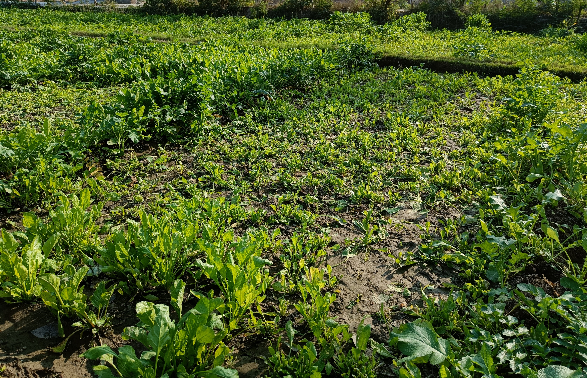
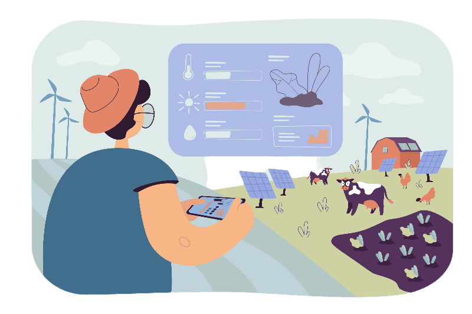
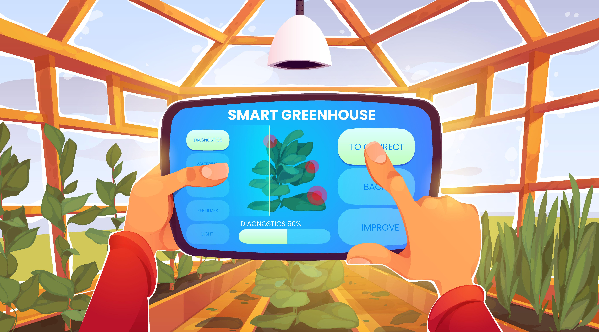

Introduction
The integration of technology in agriculture has transformed the industry, making it more efficient, safer, and sustainable. Remote control systems and automation have played a significant role in this transformation, giving farmers the ability to operate their equipment remotely. The remote control system mentioned in the previous text is a great example of this technology. It allows farmers to monitor and control their equipment from anywhere, at any time. This feature is especially helpful during extreme weather conditions, when it may not be safe for farmers to be physically present on the farm. The system's use of sensors and real-time data also helps farmers make informed decisions about their crops. By monitoring temperature, humidity, and soil moisture levels, farmers can optimize their crop yield and quality. This data also helps farmers conserve water and other resources, making the process more sustainable.
The RCS Project
The remote control system project aimed to create a user-friendly system that would allow farmers to control their farm equipment remotely. The system used an Arduino microcontroller, relays, sensors, and Bluetooth modules to create a seamless user experience. The project team designed a system that would allow farmers to use their smartphones, tablets, or computers to control their farm equipment from anywhere with a stable internet connection. The system was equipped with sensors that provided real-time feedback on the status of farm equipment, enabling farmers to make informed decisions about their crops.
How it Works?
The remote control system works by using an Arduino microcontroller that receives signals from sensors and executes commands to turn farm equipment on or off. A relay module controls the equipment's power supply, while sensors provide real-time feedback on the status of farm equipment. The Bluetooth module provides a wireless connection between the control device and the system, allowing farmers to use their smartphone, tablet or computer to control their device from anywhere with a stable internet connection.


System Design
The remote control system project used an Arduino microcontroller as the central processing unit. The microcontroller received signals from sensors and executed commands to turn farm equipment on or off. A relay module controlled the equipment's power supply, ensuring that the equipment functioned as expected. The system was designed with a user-friendly interface that displayed real-time data such as device status, temperature, humidity, and soil moisture. The interface enabled farmers to monitor and control their equipment remotely.
Benefits and Impact
The remote control system project provided numerous benefits to farmers, including saving time and energy with an efficient and safe way to control their tools and equipment remotely. It also helped conserve resources such as water, making the process more sustainable. Additionally, the project aimed to make farming more accessible and productive, contributing to the growth and sustainability of the agriculture industry.
Conclusion
The integration of technology in agriculture is critical for the industry's growth and sustainability. The remote control system project described in this article is an example of how modern technology can help farmers manage their equipment remotely, saving time and energy while making the process more sustainable. As technology continues to advance, we can expect even more innovative solutions that will transform agriculture and contribute to a more sustainable future.
Note: The Remote Control System (RCS) project was developed as part of an event aimed at promoting innovation in agriculture. The event brought together experts, entrepreneurs, and farmers to explore new ways to improve agriculture and make it more sustainable.